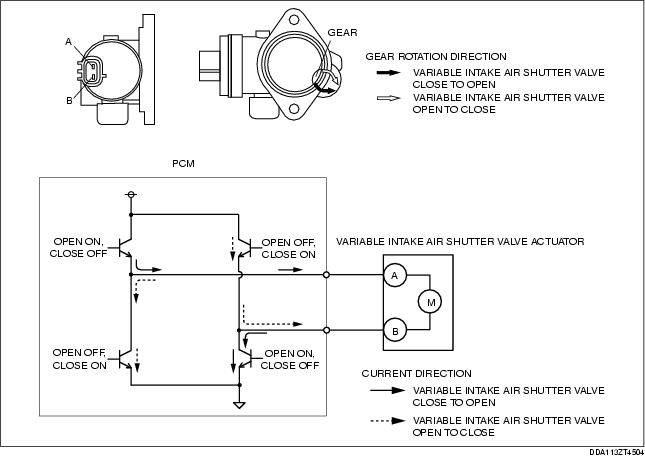

Variable intake air shutter valve actuator construction/operation [ZY]
Construction
• The shutter valve actuator is mainly composed of a DC motor and gear.
Operation
• The variable intake air shutter valve opens and closes by the operation of the motor activated by the PCM. Operation of the motor via activated directional switching switches the variable intake air shutter valve in the direction of open or closed.
• When 12 V is applied to the variable intake air shutter valve actuator terminal D, the gear moves counterclockwise and the variable intake air shutter valve opens. Conversely, when 12 V is applied to the variable intake air shutter valve actuator terminal B, the gear moves clockwise and the variable intake air shutter valve closes.
